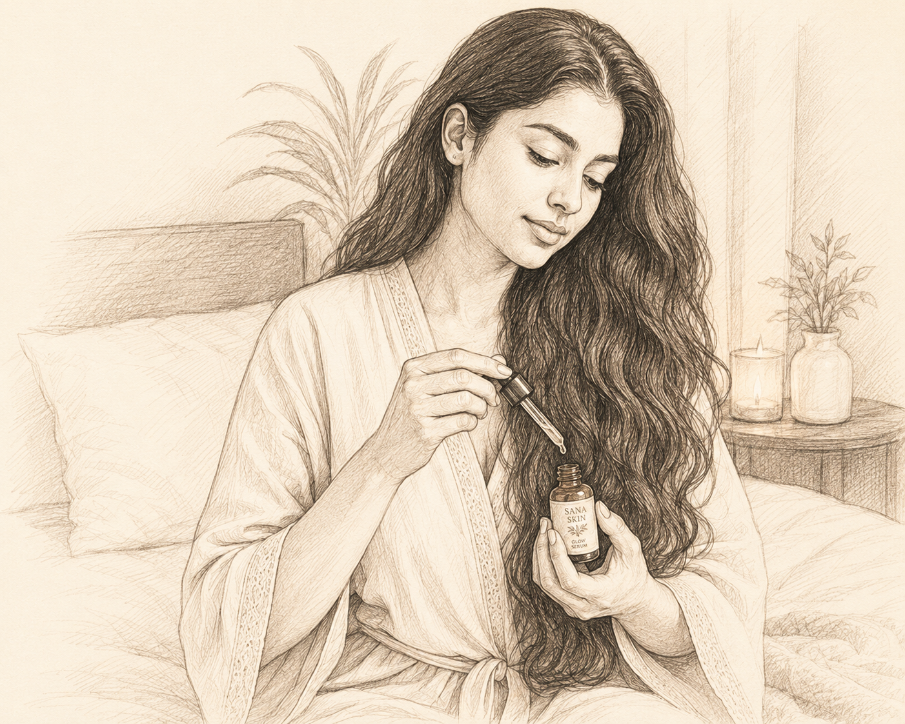

1. SET THE MOOD
Use a natural diffuser with 100% essential oils such as lavender, lemon, frankincense, or cedarwood to create an inviting atmosphere before bed.
Slow down, reset, and prepare for a peaceful night.
A mindful evening ritual can help you transition from the day and create a soothing atmosphere for rest.

Use a natural diffuser with 100% essential oils such as lavender, lemon, frankincense, or cedarwood to create an inviting atmosphere before bed.
Apply a pre-sleep oil to your shoulders and the soles of your feet as part of your evening self-care ritual.
Add a few drops of Deep Sleep Oil to your pillow to help create a calming bedtime experience.
You may massage a small amount of Relaxation Oil onto your shoulders, neck, or feet as part of your evening wind-down ritual.
HONOR YOUR RHYTHM. CARE FOR YOURSELF. REST WELL.